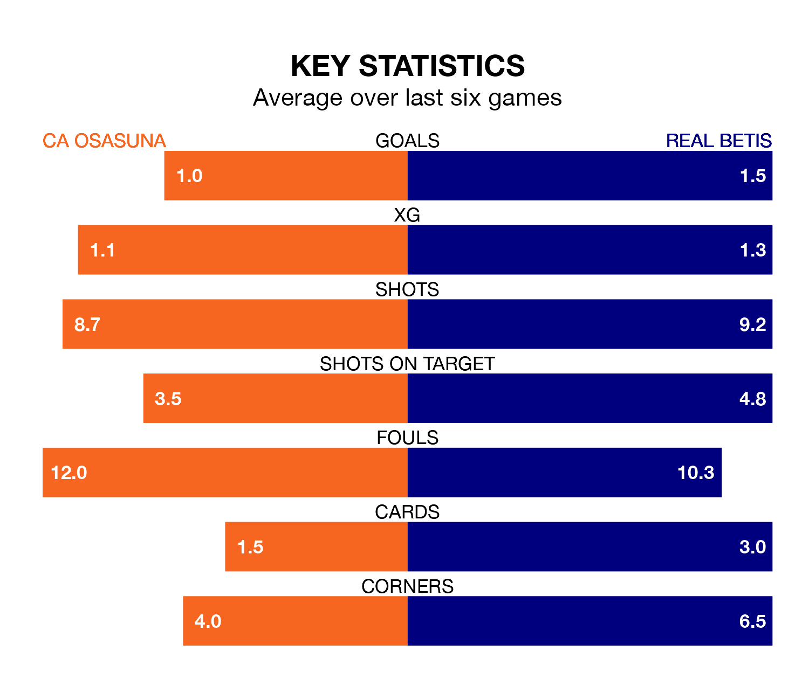

CA Osasuna welcome Real Betis to the Estadio El Sadar on Sunday lunchtime looking to pick up points to end their three-game losing streak.
Osasuna's struggles have left them with just three points from their last six La Liga matches, while their opponents have earned seven from a possible 18.
In the last 10 years, Osasuna and Betis have played each other on 15 occasions. Osasuna won three of them, Betis 10, and they drew twice.
On average, Osasuna scored 0.9 goals and Betis 2.0 in those matches.
Their last meeting was on October 29, when Betis won 2-1 at home.
With 37 goals in 33 games so far this season, Osasuna are scoring at below the league average rate with 1.1 goals per game. And they are conceding more than average, letting in 49 goals at a rate of 1.5 per game.
Betis are also below average scorers, with 1.2 goals per game, compared to a league average of 1.3. They have also conceded 1.2 goals per game.
In Ante Budimir, the home side have one of the league's most on-form strikers so far this season. He has notched 16 goals in 31 appearances, to sit fourth in the scoring charts.
His goal rate of one every 149 minutes is quicker than that of Willian José, the visitors' top scorer with a goal every 169 minutes, and a total of 10 goals in 29 games.
Betis are seventh in the table after 33 games, of which they have won 12 and drawn 13, earning 49 points.
Osasuna are four places behind Betis in 11th, with 11 wins and six draws putting them on 39 points.
Osasuna's last match was on Sunday, a 3-0 loss against Granada CF.
Betis drew 1-1 with Sevilla last time out, also on Sunday, with Isco on the scoresheet.
Updated: 10:44 (UTC), 30/04/24